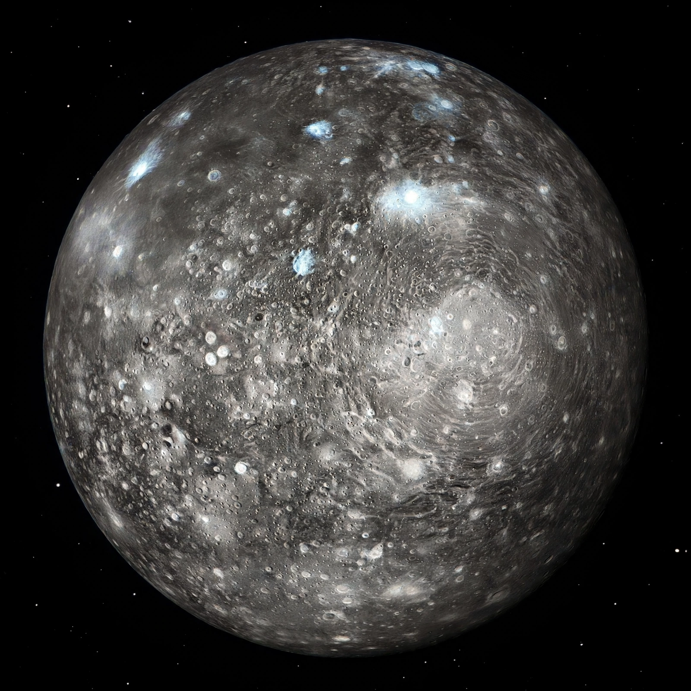

Callisto is the second-largest moon of Jupiter and the third-largest moon in the Solar System, discovered in 1610 by Galileo Galilei. It is one of the four Galilean moons.
| Callisto | |
|---|---|
 | |
| Discovery | 7 January 1610, Galileo Galilei |
| Mean radius | 2,410.3 km |
| Orbital period | 16.689 days |
| Parent planet | Jupiter |
Callisto is composed of roughly equal amounts of rock and ice, with a density of about 1.83 g/cm³. Its surface is the most heavily cratered and among the oldest in the Solar System, showing little geological activity. The bright multi-ring structure Valhalla is the largest impact basin. Spectroscopic evidence indicates water ice, carbon dioxide, silicates and organic compounds.
Callisto appears only partially differentiated. Measurements of its magnetic field by the Galileo spacecraft suggest a salty subsurface ocean may exist beneath an icy crust, though evidence is weaker than for Europa. It has a very thin carbon dioxide atmosphere.
Pioneer, Voyager, Galileo, Cassini and New Horizons have imaged Callisto. ESA's JUICE mission, launched in 2023, will make multiple Callisto flybys in the 2030s en route to Ganymede orbit. Its low radiation levels make it a candidate for a future human base in the Jovian system.
Recreated from memory.